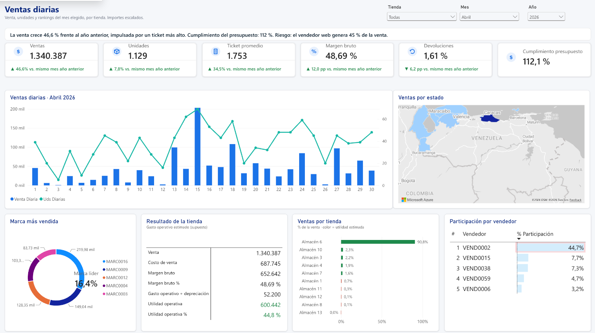
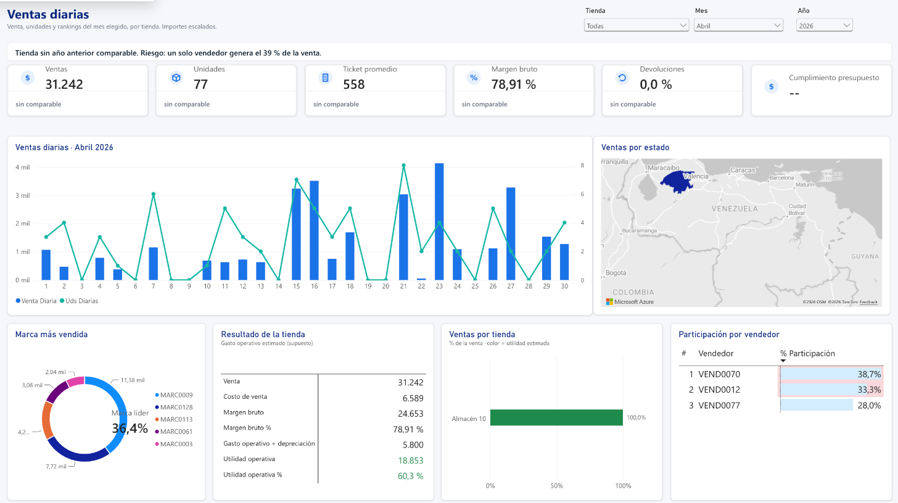
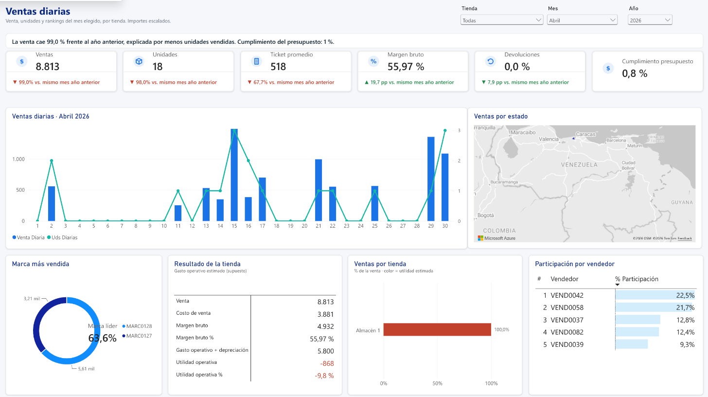
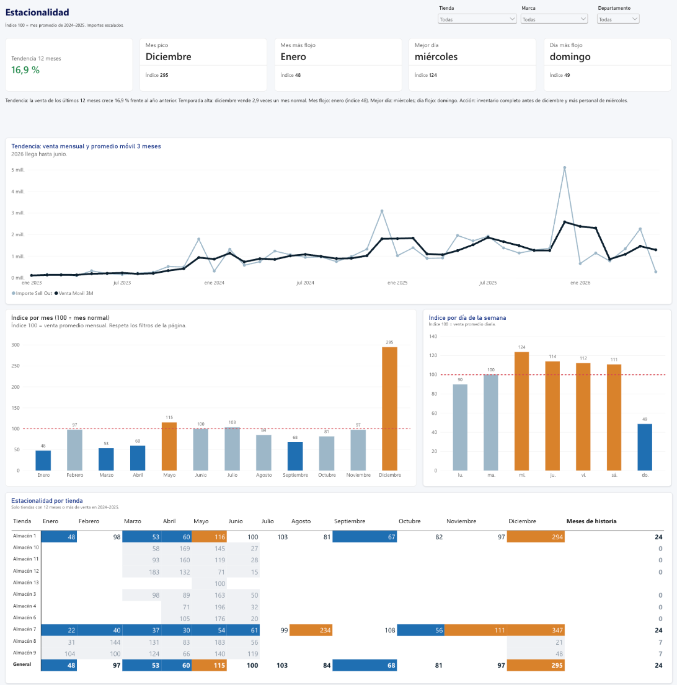
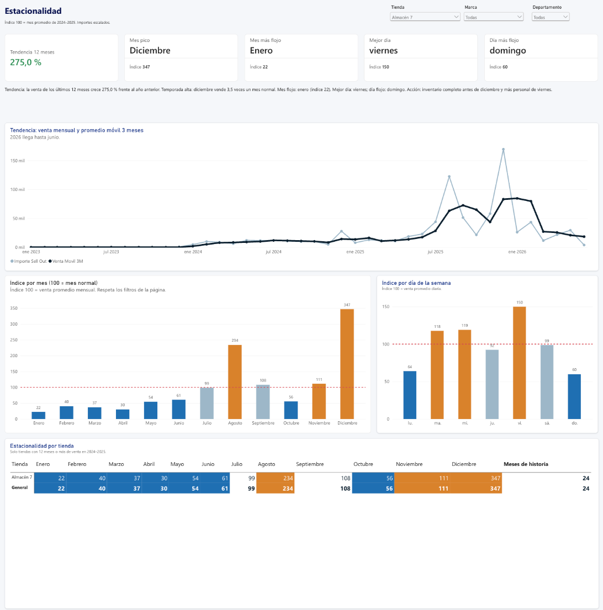

EL PROBLEMA
Ver solo la venta engaña: una tienda puede parecer en caída porque cambió dónde se factura, y otra puede verse pequeña solo porque acaba de abrir. Un comentario en LinkedIn también señaló que el tablero no hablaba de tendencias.
LO QUE HICE
Una frase de conclusión en DAX que se reescribe con cada filtro, el resultado de cada tienda después de un gasto estimado, y una página que separa la tendencia (promedio móvil) de la estacionalidad (índices por mes y por día).
DECISIONES QUE PERMITE
Comprar antes de los picos y liquidar en los meses flojos, reforzar personal en los días fuertes, facturar en la tienda donde se vende y dar tiempo a las tiendas nuevas antes de decidir sobre ellas.
Presentación de resultados
70 segundos, sin audio, en formato de presentación a gerencia: el mes, el resultado por tienda, la tendencia y las decisiones.
Las páginas nuevas
Capturas del informe publicado en Power BI Service. Toca una para verla en grande.





Hallazgos
Leídos en el informe publicado. Los importes están escalados.
La mayoría de las tiendas cubre su gasto
De octubre de 2025 a abril de 2026, 6 tiendas cubren su gasto operativo estimado y 3 no. Dos de ellas son nuevas y necesitan maduración antes de decidir.
El negocio crece
La venta de los últimos 12 meses crece frente a los 12 anteriores, medida sin el efecto de la temporada.
Diciembre manda
Diciembre vende casi tres veces un mes normal y mayo supera el promedio. Enero es el mes más flojo.
La semana se gana a mitad de semana
De miércoles a sábado se vende sobre el promedio; el domingo, la mitad.
Dependencia de un canal
En abril de 2026 el vendedor web genera el 45 % de la venta. El tablero lo marca cuando alguien supera el 30 %.
Límites
- El gasto operativo por tienda es una estimación con referencias públicas (local pequeño, 3 personas, servicios y depreciación), no un dato contable.
- La facturación centralizada hace que unas tiendas parezcan vender mucho y otras nada; los márgenes muy altos de algunas tiendas nuevas sugieren costo faltante.
- Solo dos tiendas tienen 12 meses de historia: la estacionalidad de las demás es preliminar.
- 2026 llega hasta junio y ese mes está incompleto.